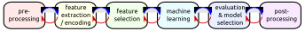
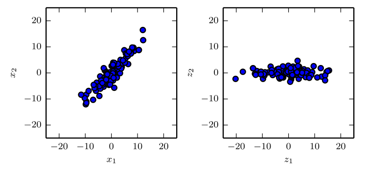
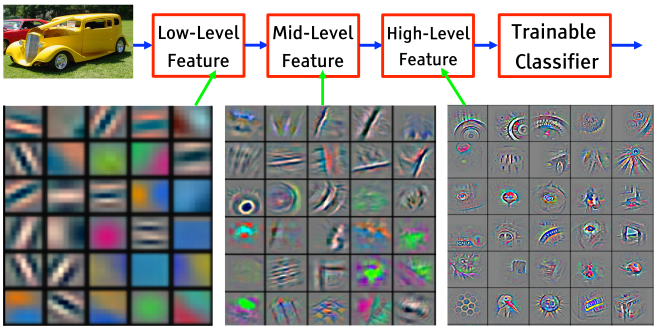

Spectrum of different “levels” of intelligence – for Machine Learning (following (Liang 2018)).
Overview common ML algorithms
How to decide which machine learning algorithm to choose for a problem (“Choosing the Right Estimator” 2018).
Remark on Gradient Boosting
ensemble method: combining multiple (weak) models, e.g. using a decision tree
applied for regression and classification
Will be mentioned in fourth lecture on combining models.
See (Friedman 2002)
Goals for Today
Selection of meaningful and disentangled features.
Understanding how reduction of dimensionality makes machine learning feasible, but projecting into higher dimensions can help for regression and classification tasks.
Modelling dynamical features as dynamical systems.
Representation Learning
Machine Learning Pipeline

(Boedecker, Hutter, and Tangermann 2016)
Features
typically hand-crafted (“feature engineering”)
feature choice impacts on required computation and obtainable generalization
extreme case: raw sensory data as features
dimensionality as major “feature choice feature”
High-dimensional feature spaces can simplify computations, e.g. enable linear separability of class regions.
Features:
elements in terms of which (usually input and output) information is encoded.
Elements of Representation
features
mappings
dynamical systems
gaussian processes
graphical models
Towards End-to-End Learning
Current ML Pipeline
End-to-End Learning in Deep NN
(Goodfellow, Bengio, and Courville 2016)
Features: Transfer Learning
Learning for multiple tasks – building a common representation.
(Nayak 2019)
Example: Waymo
Scene Representation in Autonomous Driving
What is a Knowledge Representation
Roles of knowledge representation in AI following (Davis, Shrobe, and Szolovits 1993).
A knowledge representation is …
a Surrogate – it refers/represents something in the world.
a Set of Ontological Commitments – a focus and perspective on how to see the target domain.
a Theory of Intelligent Reasoning – how is reasoning realized and what kind of inferences does the knowledge representation support?
a Medium for Efficient Computation – with respect to a tradeoff of expressability and efficiency.
a Medium of Human Expression – usability for humans.
Building a Representation
From raw visual input: pretrained convolutional networks
Principal Component Analysis PCA learns a linear projection that aligns the direction of greatest variance with the axes of the new space. (Goodfellow, Bengio, and Courville 2016)
Autoencoder (and variations)
Goal is usually to reduce dimensionality and to come up with meaningful features.
Example for PCA: Python Environment
Initialize and load python environment.
%matplotlib inlineimport numpy as npimport matplotlib.pyplot as pltfrom time import timefrom sklearn.model_selection import train_test_splitfrom sklearn.decomposition import PCAprint("Kernel loaded and initialized with libraries.")
Load faces dataset (black-white photographs).
from sklearn.datasets import fetch_lfw_peoplelfw_people = fetch_lfw_people(min_faces_per_person=70, resize=0.4)# introspect the images arrays to find the shapes (for plotting)n_samples, h, w = lfw_people.images.shape# for machine learning we use the 2 data directly (as relative pixel# positions info is ignored by this model)X = lfw_people.datan_features = X.shape[1]# the label to predict is the id of the persony = lfw_people.targettarget_names = lfw_people.target_namesn_classes = target_names.shape[0]print("Total dataset size:")print("n_samples: %d"% n_samples)print("n_features: %d"% n_features)print("n_classes: %d"% n_classes)
Show examples of different faces.
fig, ax = plt.subplots(3, 5)
for i, axi in enumerate(ax.flat):
axi.imshow(lfw_people.images[i], cmap='bone')
axi.set(xticks=[], yticks=[],
xlabel=lfw_people.target_names[lfw_people.target[i]])
Split into training and test data set.
# for machine learning we use the 2 data directly (as relative pixel
# positions info is ignored by this model)
X = lfw_people.data
n_features = X.shape[1]
# the label to predict is the id of the person
y = lfw_people.target
target_names = lfw_people.target_names
n_classes = target_names.shape[0]
print("Total dataset size:")
print("n_samples: %d" % n_samples)
print("n_features: %d" % n_features)
print("n_classes: %d" % n_classes)
# split into a training and testing set
X_train, X_test, y_train, y_test = train_test_split(
X, y, test_size=0.25, random_state=42)
Apply PCA
n_components = 150
print("Extracting the top %d eigenfaces from %d faces"
% (n_components, X_train.shape[0]))
t0 = time()
pca = PCA(n_components=n_components, svd_solver='randomized',
whiten=True).fit(X_train)
print("done in %0.3fs" % (time() - t0))
eigenfaces = pca.components_.reshape((n_components, h, w))
print("Projecting the input data on the eigenfaces orthonormal basis")
t0 = time()
X_train_pca = pca.transform(X_train)
X_test_pca = pca.transform(X_test)
print("done in %0.3fs" % (time() - t0))
Visualize Principal Components
eigenface_titles = ["eigenface %d" % i for i in range(eigenfaces.shape[0])]
plt.figure(figsize=(1.8 * 4, 2.4 * 3))
plt.subplots_adjust(bottom=0, left=.01, right=.99, top=.90, hspace=.35)
for i in range(3 * 4):
plt.subplot(3, 4, i + 1)
plt.imshow(eigenfaces[i].reshape((h, w)), cmap=plt.cm.gray)
plt.title(eigenface_titles[i], size=12)
plt.xticks(())
plt.yticks(())
From Scikit-learn tutorials: (“Faces Recognition Example Using Eigenfaces and Svms” 2019).
Example: Transfer Learning – early visual features
Learning a hierarchy of visual features on a large database, using imagenet.
(Hinton, Bengio, and LeCun 2015)
Autoencoder (Weng 2018)
Encoder translates high-dimension input into latent low-dimensional code.
The complete calculation (transformation into feature space and scalar product in order to determine similarity) can be reduced to a simpler kernel function \(k\) that does not involve the costly transformation to the high dimensional space.
Kernel Trick
The kernel trick for kernel methods as SVMs is a substitution:
All computations can be formulated in a scalar product space.
We introduce a kernel function – this express the scalar product in the higher dimensional feature space in terms of the lower-dimensional input space.
The kernel function evaluates the scalar product of the feature space only from the lower-dimensional input space.
C: regularization parameter, C, of error term for soft-margin.
kernel: kernel type (‘linear’, ‘poly’, ‘rbf’, ‘sigmoid’, ‘precomputed’).
degree: only for polynomial kernel – degree of the polynomial kernel
gamma: kernel coefficient for ‘rbf’, ‘poly’, and ‘sigmoid’
Example: SVM Face Detection
Check if environment is still running.
print("Environment still running.")
Train a Support Vector Machine (standard parameters).
from sklearn.svm import SVCclf = SVC(kernel='rbf', class_weight='balanced')clf = clf.fit(X_train_pca, y_train)
Evaluate SVM
from sklearn.metrics import classification_reporty_pred = clf.predict(X_test_pca)print(classification_report(y_test, y_pred, target_names=target_names))
RELOAD Python Environment
Initialize and load python environment.
%matplotlib inlineimport numpy as npimport matplotlib.pyplot as pltfrom time import timefrom sklearn.model_selection import train_test_splitfrom sklearn.decomposition import PCAprint("Kernel loaded and initialized with libraries.")# Load faces dataset (black-white photographs).from sklearn.datasets import fetch_lfw_peoplelfw_people = fetch_lfw_people(min_faces_per_person=70, resize=0.4)# introspect the images arrays to find the shapes (for plotting)n_samples, h, w = lfw_people.images.shape# for machine learning we use the 2 data directly (as relative pixel# positions info is ignored by this model)X = lfw_people.datan_features = X.shape[1]# the label to predict is the id of the persony = lfw_people.targettarget_names = lfw_people.target_namesn_classes = target_names.shape[0]# Split into training and test data set.# for machine learning we use the 2 data directly (as relative pixel# positions info is ignored by this model)X = lfw_people.datan_features = X.shape[1]# the label to predict is the id of the persony = lfw_people.targettarget_names = lfw_people.target_namesn_classes = target_names.shape[0]# split into a training and testing setX_train, X_test, y_train, y_test = train_test_split( X, y, test_size=0.25, random_state=42)n_components =150print("Extracting the top %d eigenfaces from %d faces"% (n_components, X_train.shape[0]))t0 = time()pca = PCA(n_components=n_components, svd_solver='randomized', whiten=True).fit(X_train)print("done in %0.3fs"% (time() - t0))eigenfaces = pca.components_.reshape((n_components, h, w))print("Projecting the input data on the eigenfaces orthonormal basis")t0 = time()X_train_pca = pca.transform(X_train)X_test_pca = pca.transform(X_test)print("done in %0.3fs"% (time() - t0))
From Scikit-learn tutorials: (“Faces Recognition Example Using Eigenfaces and Svms” 2019).
SVM – Advantages
Very robust, guaranteed to be a global minimum
Work well on small (and high dimensional) data spaces.
Does allow for non-linearly separable data (using Kernel trick).
Can be softened through a simple parameter allowing for violation of the maximum margin.
Is efficient for high-dimensional datasets as the complexity is characterized by the number of support vectors.
Support Vectors can help to understand the problem better.
Only a small number of hyperparameters.
SVM – Disadvantages
Not suitable for big datasets as the training time with SVMs becomes much more computationally intensive.
They are less effective on noisier datasets with overlapping classes.
Are often outperformed by Deep Neural Networks.
Further announcements
Remember, there is no exercise tomorrow.
There is a seminar on Deep Learning and its application in Artificial Intelligence (Dr. Andrew Melnik) - will work on current literature: 392115 Deep Learning for AI.
References
Boedecker, Joschka, Frank Hutter, and Michael Tangermann. 2016. “Machine Learning.” Lecture Notes, University of Freiburg.
Burges, Christopher J. C. 1998. “A Tutorial on Support Vector Machines for Pattern Recognition.” Data Mining and Knowledge Discovery 2: 121–67.
Davis, Randall, Howard E. Shrobe, and Peter Szolovits. 1993. “What Is a Knowledge Representation?” AI Magazine 14 (1): 17–33. citeseer.nj.nec.com/davis93what.html.
![How to decide which machine learning algorithm to choose for a problem [@cheatsheet2018].](https://miro.medium.com/max/1600/1*dYgEs2roROf3j2ANzkDHMA.png "fig:")